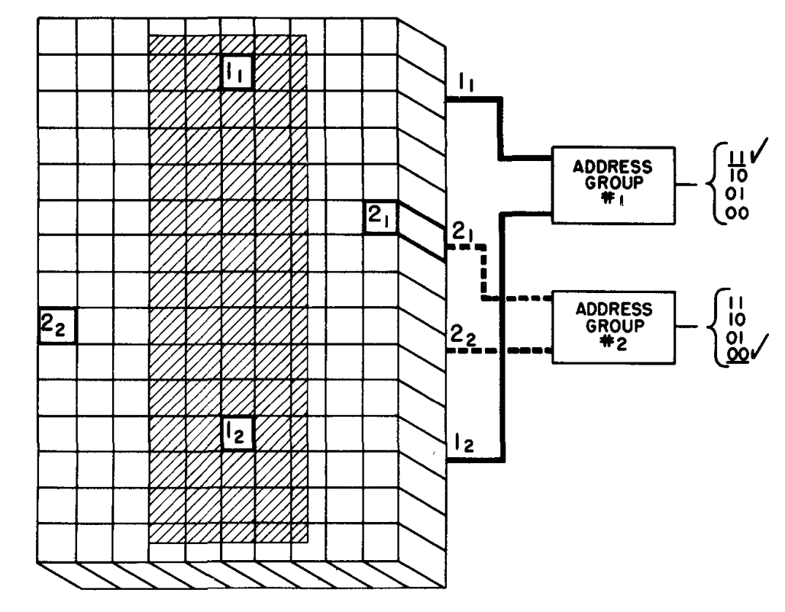
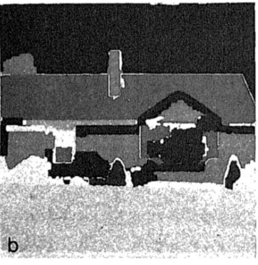
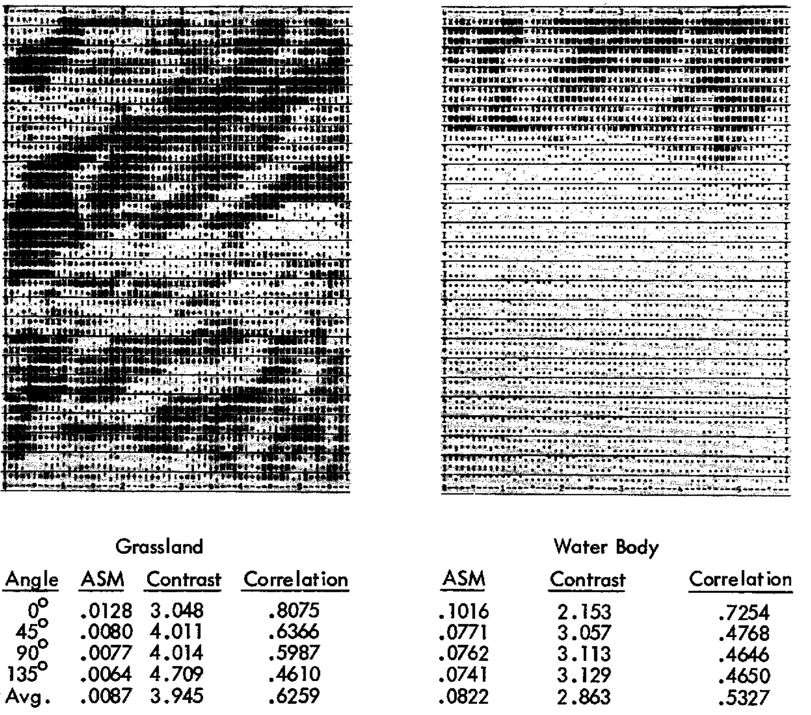

Early CV research (before 1980s)
Edge and line detection, Sobel operator (1968)

Digit recognition, N-tuple method (1959)

Image segmentation, recursive region splitting (1978)

Image classification, texture analysis (1973)

 TensorFlow (2015 - present)
TensorFlow (2015 - present)
 TensorFlow (2015 - present)
TensorFlow (2015 - present)- Dominated industry and research (2016 - present), stable v1.0.0 in 2017
- Current Status:
- TensorFlow 2.x: Actively maintained with Keras as official high-level API
- TensorFlow Lite: Mobile and embedded deployment
- TensorFlow.js: Browser-based machine learning
 Keras (2015 - present)
Keras (2015 - present)
 Keras (2015 - present)
Keras (2015 - present)- High-level, user-friendly API designed to run on top of TensorFlow, Theano, or CNTK with a focus on fast experimentation
- Became the most popular high-level neural networks API (2015 - 2019)
- Current Status:
- tf.keras: Integrated into TensorFlow 2.0 as default API
- Keras 3.0 (2023): Multi-backend support (TensorFlow, JAX, PyTorch)
- Actively maintained by Google and the community
 PyTorch (2017 - present)
PyTorch (2017 - present)
 PyTorch (2017 - present)
PyTorch (2017 - present)- Rapidly gained popularity in research community, absorbed Caffe2 (2018)
- PyTorch Foundation: Established under Linux Foundation (September 2022)
- Current Status:
- Dominates research: ~95% market share with TensorFlow
- torchvision, torchaudio, torchtext: Rich ecosystem of domain libraries
 JAX (2018 - present)
JAX (2018 - present)
 JAX (2018 - present)
JAX (2018 - present)- Not a traditional DL framework — a numerical computing library with autodiff
- Growing adoption in research, especially at Google Brain and DeepMind
- Current Status:
- Actively maintained by Google Research
- Focus: Advanced research, scientific computing, and custom architectures
Choice for this Workshop